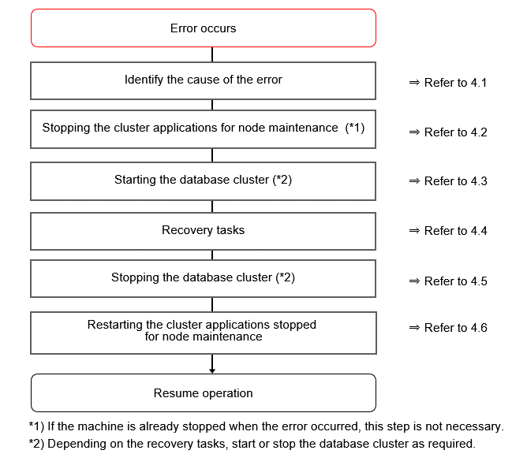

This chapter explains how to perform recovery when an abnormality occurs during failover operation.
When an error occurs during failover operation, refer to the system log to identify the cause and stop the RMS to perform recovery, separately from the RMS management. Normal operations can be resumed by restarting the RMS once the recovery is completed.
Note that the database cluster may be started or stopped without using cluster applications when performing recovery.
Refer to the tasks outlined below in "Figure 4.1 Operation flow when a failover error occurs", and perform recovery.
Figure 4.1 Operation flow when a failover error occurs
